15/01/2025 — Điện tâm đồ bình thường theo nhiều tiêu chí. Có thật sự bình thường?
Bản dịch tiếng Việt của bài "Normal ECG by many measures. Is it normal?" – Dr. Smith’s ECG Blog. Giữ nguyên toàn bộ 12 hình ảnh của bản gốc.
Ca này do Hans Helseth gửi đến; anh đang nộp hồ sơ vào trường y và hiện làm kỹ thuật viên điện tâm đồ.
Smith: Bệnh nhân này đến khám từ nhiều năm trước, nhưng lại nhập viện lần nữa đúng lúc Hans đang làm việc. Anh xem lại hồ sơ cũ của bệnh nhân, thấy các điện tâm đồ này và nhận ra ngay rằng chúng biểu hiện một OMI kín đáo.
Ngoài ra: Xem các bình luận xuất sắc của Ken Grauer ở cuối bài.
Ca bệnh
Bệnh nhân
nam 68 tuổi, tiền sử tăng huyết áp, rối loạn lipid máu
và bệnh động mạch vành (CAD) đã đặt stent RCA, đến khoa cấp
cứu vì đau ngực. Cơn đau mới xuất hiện chỉ 20 phút trước khi
đến viện, lúc ông đang chặt cành cây ngoài trời. Ông được ghi điện tâm đồ
ngay lập tức.
Điện tâm đồ 1, lúc 1646:

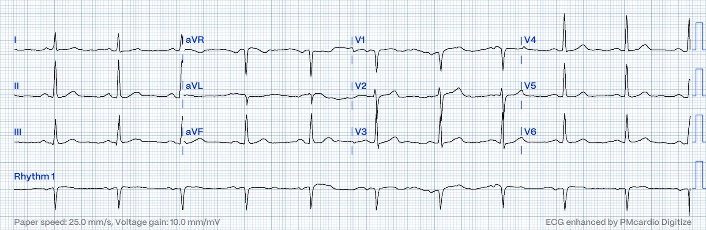
Bạn nghĩ gì?
Smith: bản ghi này đáng nghi một OMI thành dưới rất kín đáo. Có ST chênh lên (STE) tối thiểu ở các chuyển đạo dưới, nhưng đồng thời có biến dạng phần cuối QRS (terminal QRS distortion) và một chút ST chênh xuống soi gương ở aVL. Biến dạng phần cuối QRS luôn là bất thường ở chuyển đạo V2 và V3, nhưng chúng tôi cũng thấy dấu hiệu này hữu ích ở các chuyển đạo khác, dù không đặc hiệu bằng. Mặc dù ST chênh lên biến thể bình thường cũng có thể có ST chênh xuống (STD) soi gương ở aVL
Tôi muốn nói rằng Hans đã nhận ra điều này ngay lập tức. Khá ấn tượng đối với một người chưa vào trường y, thậm chí chưa từng làm điều dưỡng hay nhân viên cấp cứu ngoài viện.
Quay lại ca bệnh
Thuật
toán máy tính thông thường (Marquette 12 SL) chẩn đoán “Nhịp xoang
bình thường, điện tâm đồ bình thường”. Bác sĩ đọc lại đã xác nhận kết quả
này. Tuy nhiên, điện tâm đồ này không bình thường. Có ST
thẳng đuỗn ở các chuyển đạo dưới. Có trôi đường nền ở aVL khiến khó
đánh giá thay đổi soi gương, nhưng đằng sau nhiễu, phức bộ QRS
đầu tiên ở aVL cho thấy nhiều khả năng có ST chênh xuống. Ở một bệnh nhân mới
đau ngực và có nhiều yếu tố nguy cơ tim mạch, điện tâm đồ này rất đáng nghi
OMI thành dưới, dù cực kỳ kín đáo, và cần được ghi
lại để loại bỏ nhiễu ở aVL.
Queen of Hearts với điện tâm đồ 1: Không phải OMI, độ tin cậy cao
Mẫu
troponin T thế hệ thứ 4 đầu tiên (URL 0.05 ng/mL) được lấy lúc 1650 và
cho kết quả dưới giới hạn phát hiện. Bệnh nhân được dùng
nitroglycerin, giảm đau một phần. Ông được đánh giá
không khẩn cấp tại khoa cấp cứu, trong thời gian nằm lại cơn đau tái phát rồi hết nhiều
lần. Cuối cùng một điện tâm đồ khác được ghi. Không rõ
lúc này bệnh nhân có đau hay không.
Điện tâm đồ 2, lúc 2122:

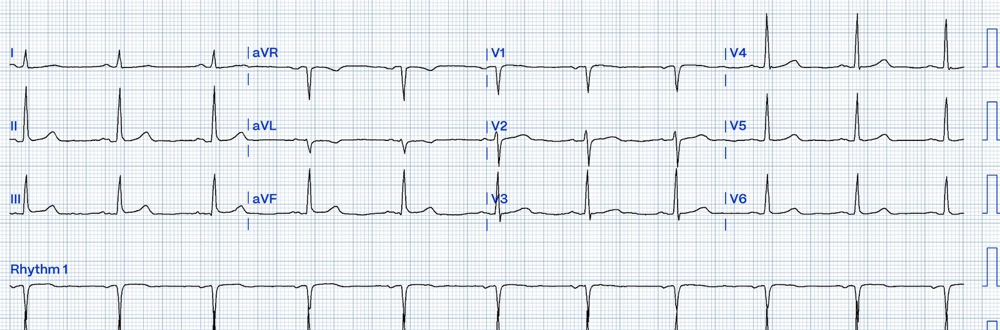
Thuật
toán máy tính gọi điện tâm đồ này là bình thường, và kết quả này
lại được bác sĩ đọc lại xác nhận, ghi nhận không có thay đổi so với
điện tâm đồ 1. Tuy nhiên, kể từ điện tâm đồ 1, sóng T ở các chuyển đạo dưới đã
trở nên lõm. Nếu động mạch của bệnh nhân thực sự bị tắc tại thời điểm
ghi điện tâm đồ 1, thì nhiều khả năng lúc này động mạch đã thông. Thay đổi này
càng củng cố chẩn đoán OMI.
Một điện tâm đồ 12 chuyển đạo khác được ghi 44 phút sau điện tâm đồ 2.
Điện tâm đồ 3, lúc 2206:

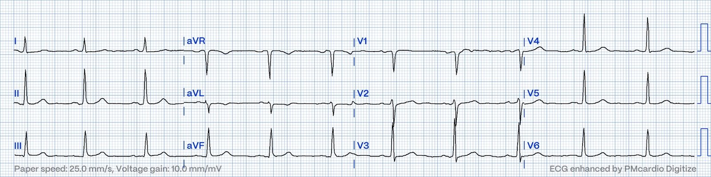
Tuy
cực kỳ kín đáo, ST chênh xuống ở aVL đã nặng lên một chút so với
điện tâm đồ 2. Điện tâm đồ này một lần nữa được cả máy tính lẫn
bác sĩ đọc lại gọi là bình thường, nhưng trong bối cảnh hai bản ghi
trước đó, dấu hiệu này gợi ý động mạch thủ phạm đã tắc lại.
Queen of Hearts với điện tâm đồ 3: Không phải OMI, độ tin cậy cao
Xem bài này, trong đó dấu hiệu đầu tiên của OMI thành dưới là ST chênh xuống khu trú ở chuyển đạo I và aVL: (https://hqmeded-ecg.blogspot.com/2019/04/a-40-yo-with-chest-pain-only-ecg.html)
Và bài này, trong đó sóng T đảo ngược khu trú ở chuyển đạo V2 và aVL là dấu hiệu duy nhất của OMI thành dưới: (https://hqmeded-ecg.blogspot.com/2020/08/computer-and-transferring-physician-say.html)
Mặc dù
troponin không phát hiện được và ba điện tâm đồ “bình thường”, tính chất
triệu chứng của bệnh nhân cùng tiền sử tim mạch rõ ràng vẫn đòi hỏi phải lo ngại
hội chứng vành cấp (ACS). Vì vậy, bệnh nhân được truyền heparin liên tục và
chuyển bằng xe cấp cứu đến một cơ sở có phòng thông tim.
Trên đường đến bệnh viện tiếp theo, nhân viên cấp cứu ngoài viện đã ghi thêm một điện tâm đồ 12 chuyển đạo.
Điện tâm đồ 4, lúc 2327:

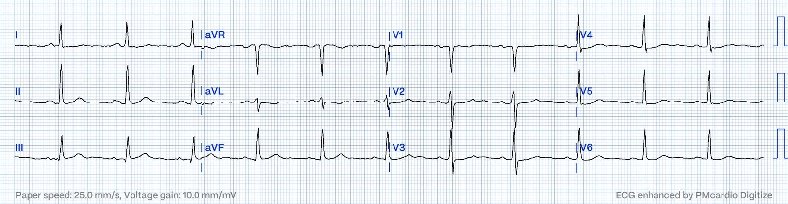
Ở
V2-V5, sóng T bắt đầu dẹt xuống và ST chênh xuống bắt đầu
xuất hiện. Sóng T ở các chuyển đạo dưới lại đang trở nên lồi.
Thuật toán máy tính (Glasgow) gọi bản ghi này là bình thường, nhưng nó rất
gợi ý OMI thành dưới và thành sau. Điều này gợi ý động mạch thủ phạm
vẫn tiếp tục tắc.
Khi đến cơ sở có phòng thông tim, một điện tâm đồ khác được ghi.
Điện tâm đồ 5, lúc 0028

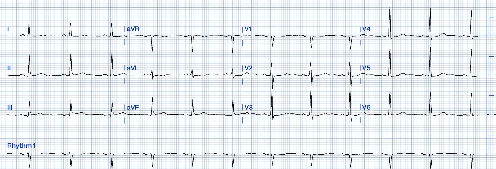
Ở
một bệnh nhân mới đau ngực và có nhiều yếu tố nguy cơ, điện tâm đồ này,
nhất là sau khi xem xét 4 điện tâm đồ trước đó, có giá trị chẩn đoán
OMI thành dưới và thành sau. Sóng T ở các chuyển đạo dưới một lần
nữa mất dạng lõm. ST chênh xuống ở aVL nằm ngang và
phần cuối sóng T dương một cách kín đáo. Có ST chênh xuống nhẹ
ở V3. Thuật toán Marquette 12 SL gọi điện tâm đồ này là bình thường, và cũng như
mọi điện tâm đồ trước đó, kết quả này được bác sĩ đọc lại
xác nhận.
Queen of Hearts với điện tâm đồ 5: Không phải OMI, độ tin cậy trung bình; nghĩa là Queen KHÔNG cho rằng điện tâm đồ này bình thường.
Lúc 0120, troponin T lặp lại được lấy: 0.13 ng/mL (giá trị này tăng, và do đó trong bối cảnh này giờ đã có giá trị chẩn đoán nhồi máu cơ tim cấp)
Lúc 0330, khoảng 11 giờ sau khi đến viện, bệnh nhân được đưa vào phòng thông tim:

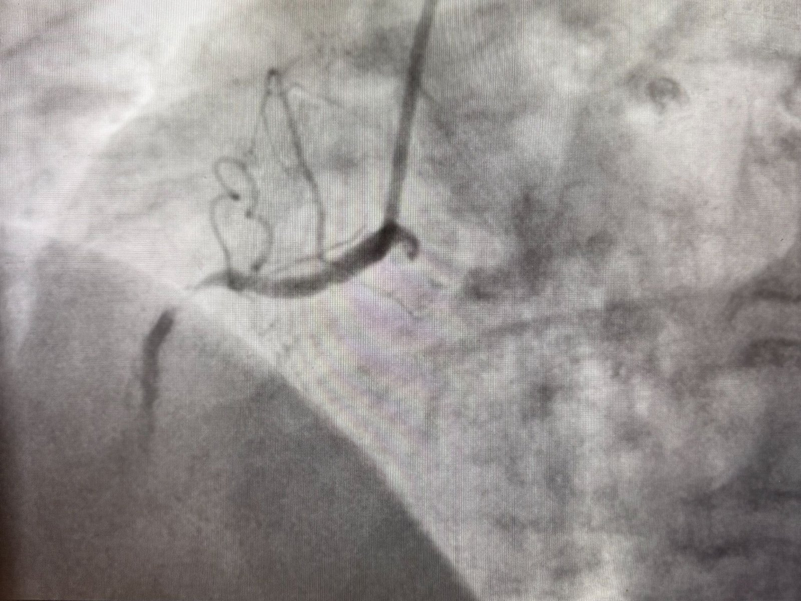
Có
tắc 99% đoạn gần của RCA với dòng chảy TIMI 2.
Trên ảnh chụp màn hình này, có thể thấy một lượng nhỏ thuốc cản quang làm hiện hình
đoạn mạch phía xa tổn thương.
Sau khi đặt stent:

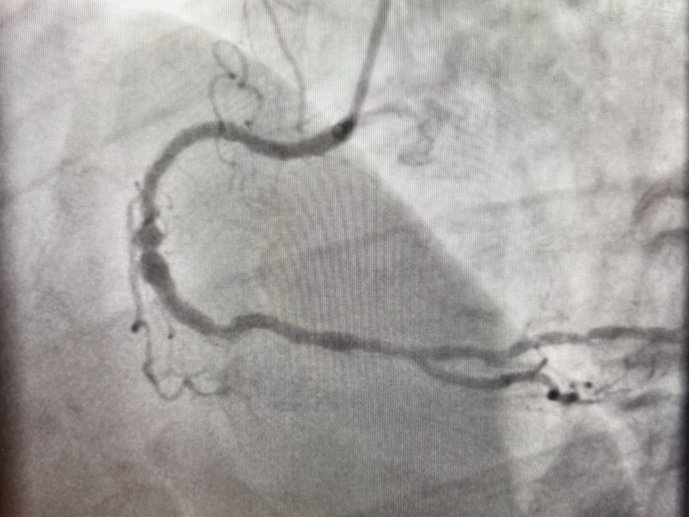
Lúc này mạch đã thông với dòng chảy TIMI 3, dù mạch bị bệnh lan tỏa và đoạn giữa bị giãn.
Chụp
buồng thất trái cho thấy giảm động vùng đáy thành dưới và EF 45%.
Troponin đạt đỉnh 0.4 ng/mL, tương đối thấp đối với OMI. Bệnh
nhân may mắn có tái tưới máu tự phát từng đợt.
Một điện tâm đồ sau thông tim được ghi lúc 0719:

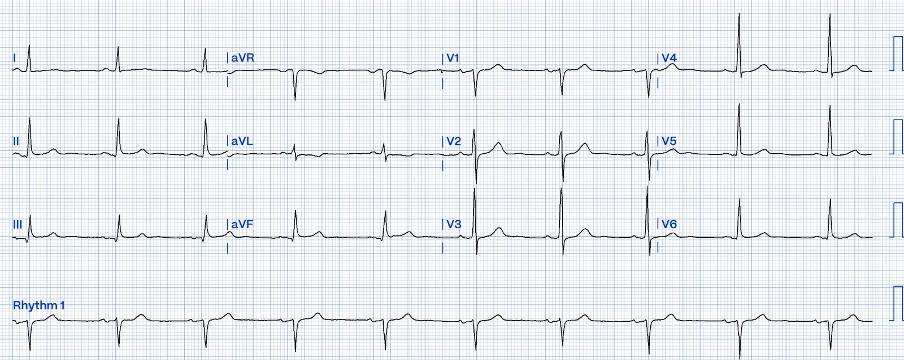
Kết quả
đọc bằng máy tính ghi “Nhịp chậm xoang, ngoài ra điện tâm đồ bình thường”.
Bác sĩ đọc lại xác nhận kết quả này, bổ sung rằng so với
điện tâm đồ 5, “tần số đã giảm”.
Trong khi ST chênh xuống và sóng T
đảo ngược vẫn còn ở aVL, sóng T ở các chuyển đạo dưới đã
trở nên lõm và nhỏ đi đôi chút. Sóng T ở các chuyển đạo
trước một lần nữa dương. Những dấu hiệu này ủng hộ tái tưới máu thành dưới và
thành sau.
Mọi
điện tâm đồ 12 chuyển đạo ghi ở bệnh nhân này trong lần nhập viện đều được tất cả các thuật toán máy tính thông thường và các bác sĩ điều trị chính
tham gia chăm sóc người bệnh gọi là
hoàn toàn bình thường. Chỉ có Queen of Hearts báo động bất kỳ mối lo ngại nào về một điện tâm đồ!
Ba năm sau, bệnh nhân lại đến khoa cấp cứu vì đau ngực. Đây là điện tâm đồ của ông trong lần nhập viện này:

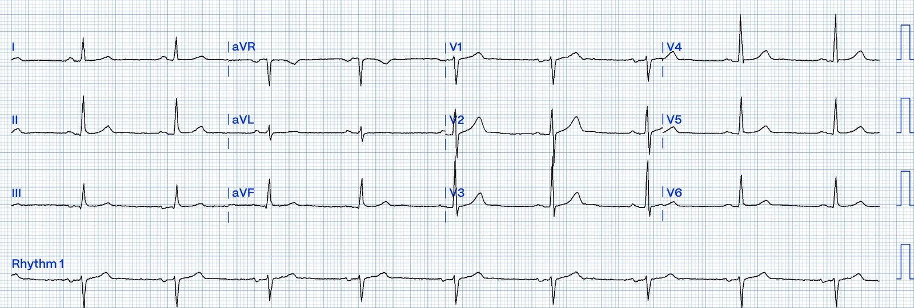
Lần này thì thật sự bình thường! Ông được xác định không bị OMI trong lần nhập viện này.
Có thể thấy diễn tiến của chuyển đạo III và aVL dưới đây:

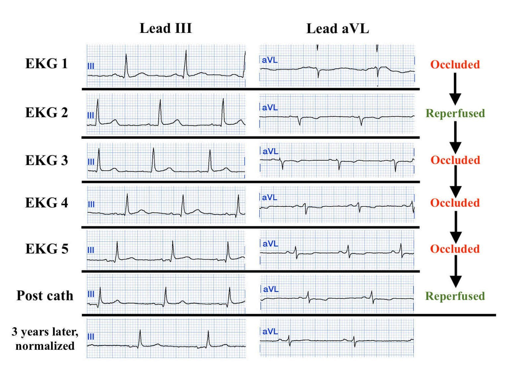
Bình luận của Smith: ca này được xử trí tốt. Bệnh nhân đau từng cơn và cuối cùng có một điện tâm đồ đủ chẩn đoán. Ngay khi troponin có giá trị chẩn đoán, kèm đau dai dẳng, có chỉ định chuyển phòng thông tim và bệnh nhân đã được đưa đi.

===================================
BÌNH LUẬN CỦA TÔI, bởi KEN GRAUER, MD (15/1/2024):
===================================
Tôi rất thích bài viết này của Hans Helseth và Dr. Smith — vì nó nêu ra vấn đề quan trọng là chúng ta định nghĩa một điện tâm đồ là “bình thường” như thế nào? Để trả lời câu hỏi đầy thách thức này — tôi xin mượn ý câu nói nổi tiếng, “Cái đẹp nằm trong mắt người nhìn“. Câu trả lời của tôi như sau:
- Định nghĩa một điện tâm đồ “bình thường“ — phụ thuộc vào hoàn cảnh lâm sàng lúc ghi bản ghi đó và phụ thuộc vào người đang đọc bản ghi.
Như Hans Helseth đã nhấn mạnh trong phần bàn luận đầy gợi mở của anh — dù 6 điện tâm đồ đầu tiên trong ca hôm nay đều được cho qua là “bình thường” bởi cả kết quả đọc bằng máy tính thông thường lẫn từng bác sĩ đọc lại — theo cách đọc của chúng tôi, không điện tâm đồ nào trong số này thực sự “bình thường”!
- Kinh nghiệm của tôi: Là người đã nghiên cứu và giảng dạy “nghệ thuật” đọc điện tâm đồ lâm sàng suốt nhiều thập kỷ — từ lâu tôi đã theo dõi và suy ngẫm với sự quan tâm và tò mò về nhãn “bản ghi bình thường” mà các bác sĩ tim mạch giỏi, giàu kinh nghiệm gán cho điện tâm đồ của bệnh nhân chúng ta. Mượn ý một câu nói nổi tiếng khác, “Ma quỷ nằm ở chi tiết”. Thực tế (khi nói đến việc đọc điện tâm đồ) là tất cả nằm ở chi tiết — và những chi tiết then chốt ấy quá thường xuyên bị bỏ qua, kể cả bởi những bác sĩ lẽ ra phải biết rõ hơn.
- Xin nhấn mạnh: Việc gọi một điện tâm đồ là “bình thường“ — không giống với nói rằng có “bất thường ST-T không đặc hiệu, có vẻ không cấp tính”. Và điều cần đi kèm với việc nhận ra các thay đổi ST-T không đặc hiệu này — là đối chiếu lâm sàng với hoàn cảnh của ca bệnh đang xét.
- Ví dụ — một điện tâm đồ giống hệt mà thực sự “bình thường” ở một người trẻ khỏe mạnh, không triệu chứng (cần ghi điện tâm đồ trong đợt khám sức khỏe tuyển dụng định kỳ) — thì ở một người lớn tuổi mới xuất hiện đau ngực nghe có vẻ do tim, lại có thể làm dấy lên một cách thích đáng nghi ngờ OMI giai đoạn sớm, vì sóng T có vẻ lớn hơn mong đợi khi xét biên độ phức bộ QRS ở chính các chuyển đạo đang xem (trong khi những sóng T trông giống hệt như vậy ở người trẻ khỏe mạnh kia mặc nhiên rõ ràng là biến thể tái cực).
Áp dụng các nguyên tắc này vào ca hôm nay — Việc nhiều bác sĩ đọc lại không nhận ra các dấu hiệu điện tâm đồ kín đáo mà Hans Helseth đã nêu bật ở trên cho thấy 3 thiếu sót quan trọng trong chuyên môn của các bác sĩ đọc lại này:
- i) Không đối chiếu dấu hiệu điện tâm đồ với tình huống lâm sàng (tức là, Mỗi điện tâm đồ được ghi vào lúc nào so với sự hiện diện, mức độ nặng và thời gian kéo dài của triệu chứng?).
- ii) Thiếu hiểu biết và nhận thức về khái niệm “giả bình thường hóa” (trong đó “trên đường” đi từ ST chênh lên của tắc mạch vành cấp — đến sự tiến triển của các thay đổi ST-T tái tưới máu — điện tâm đồ có thể trông gần như “bình thường” trong một khoảng thời gian ngắn) — và,
- iii) Rõ ràng đã không đặt các điện tâm đồ liên tiếp cạnh nhau khi so sánh các bản ghi liên tiếp để tìm diễn tiến có thể có của các dấu hiệu ST-T (một thói quen chưa tối ưu mà chúng tôi đã chỉ ra trong rất nhiều bài sẽ dẫn đến việc bỏ sót các thay đổi ST-T “động” (dynamic) kín đáo nhưng có thật).
=======================================
Để rõ ràng, trong Hình 1 — tôi đã tái hiện và đặt cạnh nhau 2 điện tâm đồ đầu tiên của ca hôm nay.
- Hãy NHÌN lại 2 bản ghi này trong Hình 1. Vì sao chúng tôi nói rằng không bản ghi nào trong hai bản này hoàn toàn “bình thường”?
- Và vì sao chúng tôi nói rằng đã có một số diễn tiến?

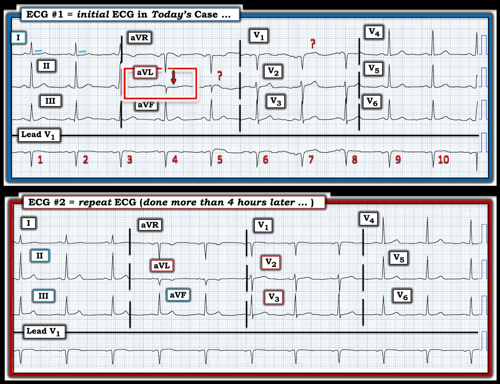
Vì sao điện tâm đồ ban đầu của ca hôm nay không “Bình thường”?
Tôi diễn giải điện tâm đồ ban đầu hôm nay là: nhịp xoang — các khoảng bình thường (PR/QRS/QTc) — trục bình thường — và không có lớn buồng tim.
Về Thay đổi Q–R–S–T trong Hình 1:
- Sóng Q rất nhỏ ở chuyển đạo III hẹp và không có ý nghĩa lâm sàng.
- Tăng tiến sóng R phù hợp, dù hơi đột ngột (vùng chuyển tiếp nhanh sang sóng R chiếm ưu thế xảy ra giữa chuyển đạo V2 đến V3).
Về Thay đổi đoạn ST-sóng T:
- “Mắt” tôi lập tức bị thu hút bởi đoạn ST chênh xuống ở chuyển đạo aVL (mũi tên ĐỎ trong chuyển đạo này ở Hình 1). Nhưng tại sao đoạn ST ở phức bộ QRS thứ 2 trong chuyển đạo aVL lại trông khác hẳn như vậy? (dấu hỏi ĐỎ trong chuyển đạo này).
- ĐIỂM THEN CHỐT #1 (PEARL): Thường rất khó phân biệt nhiễu và trôi đường nền với ST chênh xuống thật sự (có thể do thiếu máu cục bộ). Ở đây, việc chúng ta có một dải nhịp chuyển đạo dài ghi đồng thời thực sự hữu ích. Lưu ý rằng trong 10 nhát được ghi ở dải nhịp chuyển đạo V1 dài này — sóng T của nhát #5 và #7 có vẻ bị nhiễu làm biến đổi nhiều nhất. Điều này gợi ý rằng sóng ST-T của 2 nhát này ở các chuyển đạo khác là những sóng ST-T có khả năng bị nhiễu làm biến dạng nhiều nhất.
- Do đó — tôi rất nghi ngờ rằng ST dẹt và chênh xuống kín đáo-nhưng-chắc chắn thấy ở phức bộ thứ 1 trong chuyển đạo aVL (tương ứng với nhát thứ 4 được ghi trong bản ghi này) là “thật”.
- Cũng vì lý do đó — tôi cũng nghi ngờ rằng hình dạng vòm và hơi chênh lên của đoạn ST ở phức bộ thứ 2 trong chuyển đạo V1 (cũng được đánh dấu bằng dấu hỏi ĐỎ) đã bị nhiễu làm biến dạng.
- ĐIỂM THEN CHỐT #2 (PEARL): Vì các chuyển đạo kế cận thường biểu hiện những bất thường tương tự — biết rằng có ST chênh xuống bất thường kín đáo-nhưng-chắc chắn ở chuyển đạo aVL khiến tôi xem đặc biệt kỹ hình dạng đoạn ST ở chuyển đạo bên cao còn lại = chuyển đạo I. Làm vậy — tôi nghi ngờ rằng ST dẹt kín đáo ở chuyển đạo I có lẽ có ý nghĩa tương tự như bất thường sóng ST-T mà chúng ta thấy ở chuyển đạo aVL.
Xin nhấn mạnh: Hình ảnh sóng ST-T dẹt kín đáo này ở chuyển đạo I và aVL của điện tâm đồ #1 là sai lệch duy nhất tôi nhận thấy so với những gì lẽ ra sẽ phù hợp với định nghĩa của tôi về một điện tâm đồ “bình thường”. Tôi nhận định hình ảnh sóng ST-T dẹt ở các chuyển đạo bên cao I và aVL này là một dấu hiệu không đặc hiệu — mà nếu đứng riêng lẻ — sẽ không có vẻ là cấp tính.
- NHƯNG — Chúng ta cần đối chiếu thay đổi kín đáo ở 2 chuyển đạo kế cận này với bệnh cảnh lâm sàng — và, người đàn ông lớn tuổi này, đã biết có bệnh mạch vành, đến khoa cấp cứu (ED) vì CP mới xuất hiện (đau ngực — Chest Pain) khởi phát chỉ 20 phút trước đó. Trong bối cảnh lâm sàng này — Chúng ta không biết dấu hiệu sóng ST-T không đặc hiệu ở 2 chuyển đạo bên cao này có thể mang ý nghĩa gì (nếu có).
- Khi không có sẵn một điện tâm đồ trước đó — chúng ta cũng không biết liệu có thêm những dấu hiệu “mới” nào so với bản ghi nền thường ngày của bệnh nhân này hay không.
- ĐIỀU CỐT LÕI: Trong bối cảnh lâm sàng của ca hôm nay — điện tâm đồ ban đầu này không phải là một bản ghi “bình thường”. Nó có thể là, hoặc không là, những dấu hiệu sớm của một biến cố cấp tính mới.
- Thực tế lâm sàng là chúng ta sẽ không thể biết ý nghĩa (nếu có) của các dấu hiệu trên điện tâm đồ #1 cho đến khi có thêm thông tin (tức là, ghi lại điện tâm đồ trong vòng không quá 30 phút — làm nhiều hơn một lần Troponin, vì ngay cả khi có OMI, hs-Troponin ban đầu đôi khi vẫn có thể bình thường — và — theo dõi sát triệu chứng CP của bệnh nhân này).
So sánh điện tâm đồ #1 và điện tâm đồ #2:
Chờ hơn 4 giờ mới ghi lại điện tâm đồ cho bệnh nhân này rõ ràng là một sai lầm (tức là, vì CP của bệnh nhân này khởi phát chỉ 20 phút trước khi ông đến khoa cấp cứu — ghi lại điện tâm đồ trong vòng 10 đến 20 phút kèm ghi chú về sự hiện diện và mức độ nặng tương đối của CP tại thời điểm ghi điện tâm đồ thứ 2 này có lẽ đã là tất cả những gì cần để xác nhận một OMI cấp đang tiến triển).
- Ngoài ra — bệnh nhân hôm nay có CP “tái phát rồi tự hết nhiều lần” trong hơn 4 giờ kể từ lúc ghi điện tâm đồ ban đầu cho đến khi điện tâm đồ được ghi lại. Và như vậy đã bỏ lỡ “cơ hội vàng” để chẩn đoán xác định từ lâu trước 11 giờ mà cuối cùng phải mất mới đưa được bệnh nhân này đến phòng thông tim (cath lab).
Các nhân viên y tế trong ca hôm nay đã diễn giải cả hai điện tâm đồ ở Hình 1 là “bình thường”. Suy ra — điều này có nghĩa là họ hẳn đã cho rằng không có thay đổi nào giữa điện tâm đồ #1 và điện tâm đồ #2.
- Với tôi — điều này có nghĩa là các nhân viên y tế trong ca này đã không so sánh 2 bản ghi ở Hình 1 bằng cách xem từng chuyển đạo một để tìm xem có thay đổi nào không.
Dù các thay đổi sóng ST-T xảy ra giữa hai thời điểm ghi 2 bản ghi này là kín đáo — ở người đàn ông lớn tuổi này, đã biết có bệnh mạch vành và có CP mới xuất hiện — Chẳng phải có những khác biệt thật sự ở chuyển đạo aVL,V2,V3 sao?
- Lưu ý rằng hầu như không có nhiễu trên điện tâm đồ #2.
- Cũng không có thay đổi nào về trục mặt phẳng trán, tăng tiến sóng R hay hình dạng QRS giữa 2 bản ghi. Điều này có nghĩa là việc so sánh từng chuyển đạo một để tìm bất kỳ khác biệt kín đáo nào là có giá trị.
- Chuyển đạo aVL — giờ cho thấy ST dạng vòm và sóng T đảo ngược, vốn không có trên điện tâm đồ #1.
- Chuyển đạo V2,V3 — giờ cho thấy đoạn ST dẹt và biên độ sóng T giảm. Như vậy, đã mất đi đoạn ST chênh lên nhẹ, dốc lên thoai thoải ở V2,V3 — dấu hiệu mà chúng tôi rất thường nhấn mạnh là dấu hiệu đầu tiên của OMI thành sau đang diễn ra.
- Trong bối cảnh các thay đổi kín đáo-nhưng-thật này ở aVL,V2,V3 — tôi cho rằng có gợi ý ST bắt đầu chênh lên, kèm sóng T nhọn trông cấp tính hơn ở mỗi chuyển đạo dưới.
- ĐIỀU CỐT LÕI: Điện tâm đồ #2 không phải là một bản ghi “bình thường”. Hơn thế nhiều — ở người đàn ông lớn tuổi này, đã biết có bệnh mạch vành và có CP mới xuất hiện — chúng ta thấy thay đổi sóng ST-T “động” ở 6 chuyển đạo — điều này phải gợi ý OMI dưới-sau cấp cho đến khi chứng minh được điều ngược lại.
BÀI HỌC cần rút ra:
- Điện tâm đồ học lâm sàng đòi hỏi rằng không thể diễn giải điện tâm đồ mà không đối chiếu với hoàn cảnh lâm sàng. CP mới xuất hiện đủ nặng để phải đến khám ở khoa cấp cứu, xảy ra ở một người đàn ông lớn tuổi đã biết có bệnh mạch vành (như trong ca hôm nay) — có nghĩa là khả năng rất cao bệnh nhân đang trải qua một biến cố cấp tính — điều này có nghĩa là ngay cả những bất thường điện tâm đồ tưởng như rất nhỏ cũng phải được chấp nhận là có thể có ý nghĩa cho đến khi chúng ta chứng minh được điều ngược lại.
- Định lượng mức độ nặng tương đối của CP tại thời điểm ghi mỗi điện tâm đồ là thiết yếu để hiểu tối ưu những thay đổi điện tâm đồ mà chúng ta đang tìm (Thang điểm số từ 1 đến 10 có lẽ là tốt nhất để ghi nhận mức độ nặng của CP).
- Khi CP tái phát (như dường như đã xảy ra nhiều lần trong ca hôm nay) — cần phải ghi lại điện tâm đồ.
- Chú ý đến chi tiết khi so sánh các điện tâm đồ liên tiếp từng chuyển đạo một là cách TỐT NHẤT để tránh những sai sót trong ca hôm nay — gọi cả điện tâm đồ #1 và điện tâm đồ #2 là “bình thường” — với “không thay đổi” giữa 2 bản ghi.